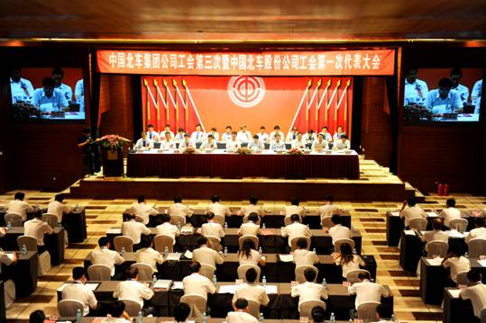

工会工作

中国北车工会下设17个企业工会和1个总部工会，600多个分厂（车间）工会，5,000多个工会小组；共有会员9万人，其中女职工会员1.8万 人。近年来，中国北车各级工会组织坚持中国特色社会主义工会发展道路，全面贯彻落实科学发展观，依照《中华人民共和国工会法》和《中国工会章程》，认真履 行职责，促进企业发展，维护职工权益。
中国北车工会坚持把促进企业生产经营作为维护职工的最大权益，融入中心，服务大局。主动配合促进生产经营，有针对性地抓好职工思想引导和稳定工作。围绕公 司「成长、效益、健康」三大主题，全面开展建功立业劳动竞赛活动和「降本提效增实力」活动。深入开展职工经济技术创新，坚持开展职工提合理化建议、技术攻 关立项、推广先进操作法活动。全力推进工会保质量保安全三项机制建设。2010年以来，中国北车涌现出9名全国劳动模范，7名个人荣获全国五一劳动奖 章，3个集体荣获全国工人先锋号，一大批先进集体和个人荣获省部级荣誉称号。
中国北车工会坚持把深化民主管理、发展和谐劳动关系作为工作主线。全面推动各企业落实职代会五项职权，审议行政报告，确立年度目标；审议通过职工福利计 划、职工培训计划、劳动保护费和业务招待费收支报告；评议企业领导人员；选举和更换职工董事、职工监事；坚持把职代会作为厂务公开主渠道，探索推行厂务公 开管理标准化。深入学习贯彻《劳动合同法》，强化《集体合同》和《劳动合同》的管理，积极参与修订企业管理制度。中国北车集团公司被评为全国推进厂务公开 先进单位，所属14个企业荣获全国厂务公开先进单位。
中国北车工会坚持把「创建学习型组织，争做知识型职工」活动作为增长职工本领的重要途径，投入足够精力，通过多种形式，持久深入推进，培养造就「中国第一 代高铁工人」，促进企业和职工共同发展。实录职工典型事迹，编辑出版了《感动北车》（第一部、第二部），呈送温家宝总理，受到新闻媒体广泛关注，在集团内 外产生很大反响，宣传了北车企业形象，展示了北车职工风采。激活企业细胞，深入推进班组创建活动，全公司共有近4000个班组参加创建活动。根据党委部 署，在职工中积极开展「我的行为讲规范」活动，强化和固化「按规矩做人，按规则做事」理念，引导和教育职工认真履行岗位规范，在规则上细化，在细节上做实，在标准上严守，养成良好的职业和行为习惯，实现规范出效益，规范塑品牌。
中国北车工会认真履行帮困救助职责，多种渠道筹措资金，千方百计扶贫帮困，推进构建和谐北车。主动协助党政，深入开展重大节日送温暖活动，领导班子成员坚 持深入所属企业走访慰问劳模、困难职工，给困难职工以信心，给困难企业以鼓舞。各企业通过不断完善帮困救助、爱心助学、医疗合作补充保险三个机制，积极推 动「三不让」活动深入发展。举办了中国北车第三届职工体育运动会，展示了中国北车职工团队风貌。坚持群众性原则，积极开展小型多样、群众喜欢的文体活动， 不断增强企业的凝聚力。
中国北车工会着眼于提升效率，不断夯实基础，加强工会自身建设。探索建立现代企业工会工作绩效管理评价体系，实施目标管理，促进工作落实。认真落实会员权 利，两级工会按期召开代表大会、全委会，选举「两委」成员，报告重要工作，讨论重大事项。坚持开展工会干部素质能力培训。加强工会信息调研、财务基础管理和经费审查工作。中国北车工会和所属17个企业工会荣获并保持全国模范职工之家称号。